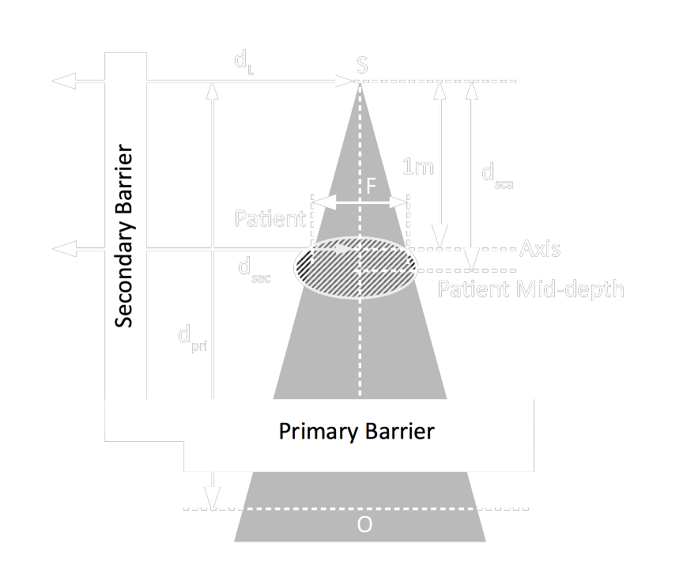
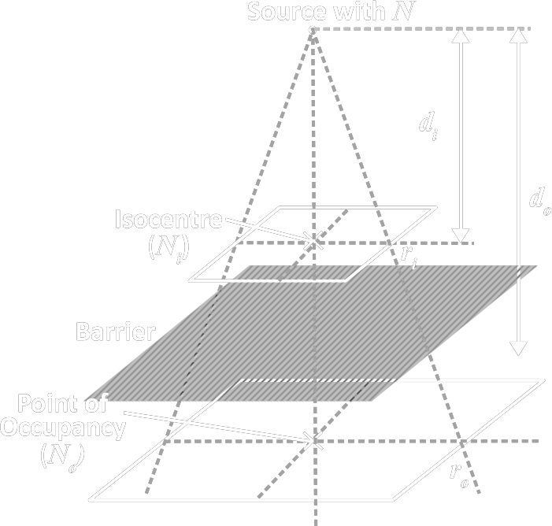

| (ICRP) Fundamental Principle of Radiation Protection |
1. Justification 2. Optimisation 3. Dose Limit |
|||||||||||||||||||||
| Level of Protection |
|
|||||||||||||||||||||
| DDREF |
Dose and Dose Rate Effective Factor
cancer risk ← usually quantified using HIGH dose + dose rate
in the case of LOW dose + doserate cancer risk reduced by a factor of DDREF (usually 2) |
|||||||||||||||||||||
| AMAD |
Activity Median Aerodynamic Diameter
→ describe the median diameter of a batch of aerosol
|
|||||||||||||||||||||
| f1 value | = fractional absorption from GI tract → blood |
| Monitoring |
Occupational
Effective Dose
Hp(10) Personal Dose Equivalent
= equivalent dose at 10 mm tissue depth
Hp(0.07) Equivalent Dose to Skin
= equivalent dose at 0.07 mm tissue depth
\[ E_{skin} = H_p(0.07) \times W_{skin} \]
where
Eskin = Effective Dose to Skin
Wskin = Tissue Weighting Factor for Skin = 0.01 H*(10) Ambient Dose Equivalent
H'(0.07, Ω) Directional Dose Equivalent E(t) Committed Effective Dose
= Effective Dose from Intake in a time period t in year
e.g. E(50) ∼ expected years working in the workforce $$ \begin{align} E(50) &= E_{inh}(50) + E_{ing}(50) \\ \\ \Large &= \sum_i{e_i(50)}~A_i + \sum_j{e_j(50)}~A_j \end{align} $$
where
e = committed effective dose coefficient (Sv Bq-1)
A = activity intake (Bq) |
||||||
| Radionuclide Dependent Limit |
ALI Annual Limit on Intake of a radionuclide
Considering a person only consume one type of radionuclide j,
the committed effective dose \( E(50) = e_j(50)~A_j\). When Aj = ALIj, \(E(50) = E_{limit}\), i.e. \[ E_{limit} = e(50)~ ALI_j \]
where
Elimit = occupational annual limit 20 mSv yr-1
DAC Derived Air Concentration of a radionuclide
= activity concentration in air (Bq m-3)
which would lead to an intake of ALI
\[ DAC_j = \frac{ALI_j}{2200} \]
assuming breathing rate = 1.1 m3h-1 and annual working hour = 50 weeks × 5 days × 8 hrs = 2000 h |
||||||
| Fluoroscopic Scatter | mainly from patient 90° to beam direction [2] |
| Transport Index (TI) |
TI × 10 = Dose Rate at 1 m (μSv h-1)
|
|||||||||||||||||||||||
| Criticality Safety Index | ||||||||||||||||||||||||
| Package Label |
|
|||||||||||||||||||||||
| A1 / A2 |
A1 = Activity of Special Form Radioactive Material A2 = (in other form) |
|||||||||||||||||||||||
| Package Type |
Expected Package Industrial Package IP-1/2/3 A / B(U) / B(M) / C
|
|||||||||||||||||||||||
| Material Type/Group |
I-WHITE/II-YELLOW/III-YELLOW LSA-I/II/III, SCO-I/II/III (SCO) Surface Contaminated Object Special Form Radioactive Material
Low Dispersible Radioactive Material
|
|||||||||||||||||||||||
| Maximum Dose Rate |
|
|||||||||||||||||||||||
| Nominal Shielding |
|
|||||||||||||||||||||||||||||||||||
| Controlled Area |
= access/occupancy/working condition are controlled ← trained worker ← exposure/dose individually monitored |
|||||||||||||||||||||||||||||||||||
| Primary Barrier |
\[ \large B_{pri} = \frac{ P{d_{pri}}^2 }{WUT} \]
|
|||||||||||||||||||||||||||||||||||
| Secondary Barrier |
Secondary Radiation consists of
1. LINAC Head Leakage
2. Patient Scatter 3. Wall Scatter 4. Secondary Radiation from LINAC Head/Wall ∵ leakage and scatter at different energy level ∴ considered separately Head Leakage Radiation \[ \large B_L = \frac{P{d_L}^2}{ (L)WUT } \]
where
\(d_L\) = the closest point of occupancy
from source
if equal usage to all gantry angle, \(d_L\) = distance from the isocentre
\(L\) = 0.1% (10-3) of primary beam (LINAC) 0.2% of source energy (Co-60) Patient Scattered \[ \large B_{pat} = \frac{P~{d_{sca}}^2~{d_{sec}}^2}{a~WT} ~{20 \times 20 \over F} \]
where
\(a\) = fraction of the primary beam absorbed dose scattered from the patient at a particular angle
\(d_{sca}\) = target → patient distance \(d_{sec}\) = patient → protection point \(20 \times 20\) = reference field size \(F\) = field size at 1 m at patient mid-depth |
|||||||||||||||||||||||||||||||||||
| Maze | Main purpose = ↓ door thickness | |||||||||||||||||||||||||||||||||||
| Shielding Material |
Gamma Shielding
Neutron Shielding
LINAC Primary Beam Shield [4]
|
|||||||||||||||||||||||||||||||||||
| Necessity of Categorisation [3] |
Why Need Categorisation
|
|||||||||||||||||||
| Categorising RS |
Activity Ratio A/D
\[ \frac{A}{D} = \frac{Activity~(TBq)}{D~Value} \]
where
D = activity of a radionuclide that would cause
severe deterministic health effect
Category
|
| Shielding Calculation (NCRP Report 151) |

Derivation

Similar triangle:
\[ {d_o \over d_i} = {r_o \over r_i} \]
On the plane where isocentre is, \[ N_i {r_i}^2 = N\] On the plane where the point of occupancy is (after shielding), \[ N_o {r_o}^2 = {NB} \] We now have, \[ N_o {r_o}^2 = {1 \over k} N_i {r_i}^2 \] When \({1 \over k}=B\), \[ N_o {r_o}^2 = B N_i {r_i}^2 \] $$ \begin{align} B & = { N_o \over N_i } \left( {r_o \over r_i} \right)^2 \\ & = { N_o \over N_i } \left( {d_o \over d_i} \right)^2 \\ & = { N_o {d_o}^2 \over N_i {d_i}^2 } \end{align} $$ |